Preface
Hello!
Some of you might know me from my work on /r/SolvingTibia - and I've finally gotten an answer to 469-lore that I am happy with.
It's written from the perspective that I figured it out which I firmly believe in, so it's going to be a bit biased.
A lot of people have read this, while many agree, some don't.
This is a long read and I'm not forcing you to read it, I like writing and sharing.
Some like to listen.
Ahh, 469. Arguably the 'biggest' mystery of Tibia. The one I have likely spent the most time on.
I can't express the excitement I feel about sharing this with you all.
I'm not sure how to begin as this took so long to find, exploring almost every nook and cranny, trying to explain as many mysteries big and small as I could before I had enough pieces of the riddle for it to click.
It's not possible to write a TL;DR on this, it would spoil over two decades of work by the content team at CipSoft. While I will spoil it, I cannot punch em' harder than I already am. And you wouldn't even believe me if I told you in a sentence or two. If you scroll down to the end, it will be too obscure for you and you wouldn't be able to comprehend it. So I have to write this in a way that you will be able to understand and figure it out yourself, while I'm guiding and giving you hints, showing my journey through the wicked minds of Knightmare and everyone who has been on the content team.
I've worked tirelessly over a year on this - of course with some help from others. Every book, transcript and picture I show you is extremely important for you to understand the context and this story - it has been shrouded in mystery for well over two decades for a reason.
I cannot make this any shorter, it will take some time to digest. It's difficult, almost impossible to explain twenty years of work in one article where you understand.
Lastly, you need to let go of what you think lore is, I will show you obscurities that form a whole. please have some faith in me.. It might sound weird and outrageous at start, but slowly & surely you will understand, and you will see. =)

Bonelords, I'm sure you know a lot about them already but not everyone does, so we have to get a general picture of them, and read some books. I'll be referencing them later as you start to see things with new eyes ;o;)
Bonelords are very old, we can read some interesting details about them and around which time they emerged in this very mysterious book found within Isle of the Kings.
The Ancient Bonelords
Some of the ancient races that rose and decayed during the wars of the gods were incredible powerful compared to modern mankind. Only tales of surviving ancients tell us about this people. There were races like the S'vir who travelled the sky in their cloud ships; beings like the elephant men, their name is long forgotten, whose ordinary speech were words of magic that formed reality around them. Then there were the Tur'osk'ahar which are remembered for creating runes as big as a ship; or the unnamed race that tamed and mastered the forces of ice and coldness to serve them; not to forget, the ancestors of the modern bonelords who could raise whole armies of undead in a blink and summon abominations of decay and bones as huge as a house. Some of the modern races had ancestors which were far more powerful than their kin today. As the war continued and the bitterness grew, less and less races were able to raise to greatness: It is said that humans and orcs were the least and the last of the races created.
The ancient bonelords does not seem like the modern bonelords - let's see what the modern humans have to say about them. After this, I promise it will get more interesting as we start to follow tricky leads on a mystery over two decades old.
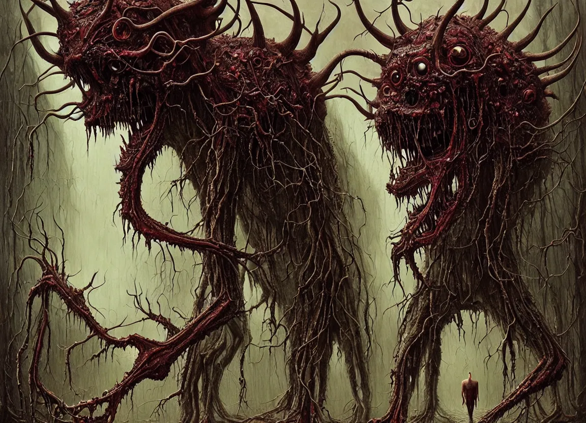
The Bonelord Threat I
Once in the olden days, the bonelords numbered among the most powerful races of the world. Their mighty cities, which characteristically contained ominous dark pyramids, could be found all over the world. The bonelords erected them using the same innate form of telekinesis which lets their bodies float in the air. However, they could not do completely without hands and arms that did their bidding. For this reason they relied on another innate power of their race - the dark power of necromancy. Thanks to the magical abilities of their tentacles, which are capable of producing various powerful kinds of magic to an extent that is denied to other races unless they study for many decades, the bonelords also knew how to command the dead. As a result, they used a monstrous strategy: Whenever they conquered an area they turned their unfortunate victims into undead slaves. Using these undead legions as their shock troops, the bonelords went from victory to victory. They built a huge fortress that served as their power base, and from there they went to conquer the world.
So they were able to produce various elements using their eyes, that's interesting.. and this somehow resulted in their ability to control the dead.
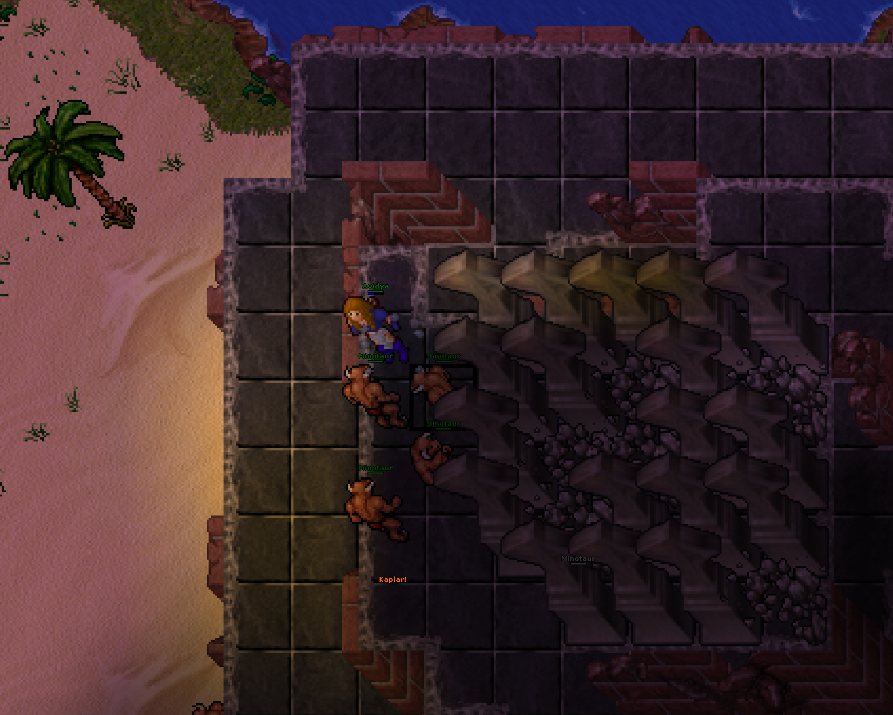
The Bonelord Threat II
It seemed like the bonelords, which were created by the gods as a counterweight to another race that preceded them in the god wars, were unstoppable. But, alas! In the end, they shared the same fate that most other races suffered during the god wars: Yet another race appeared on the scene which proved to be even mightier. They were well protected against the bonelords' magical arsenal, and so it was only a question of time before the bonelords' empire collapsed. The bonelords were replaced by a succession of other races that were chosen by the dark gods to champion their cause. One race followed another, sometimes even before the previous race had become extinct. All the while, the bonelords fared better than most of their successors: Owing to the fact that they had once conquered the whole world, small areas of their civilisation remained even while their once mighty cities disappeared and their mysterious pyramids crumbled to dust. Many bonelords chose to hide below the surface of the world, fighting fierce underground wars to win supremacy over the other races that had fled the surface where the god wars raged on. Their successes were limited, but at least the bonelords managed to establish a number of new subterranean bases, which were safe even though they lacked the grandeur of the bonelords former cities.
The bonelords had learnt the bitter lessons from the gruesome wars that had led them to the brink of extinction. They had realised the limitations of their race, and they decided to work on their weaknesses. They found that they had relied too heavily on their intuitive powers in the past, and they decided to improve their innate powers through research and experiments. The dark art of necromancy seemed especially promising, so a group of bonelords concentrated all their efforts towards improving their powers to master the undead.
The author speculates that the bonelords were replaced by another race chosen by the dark gods, while their empire & cities crumbled to dust.
The Bonelords Threat III
These efforts met with a first, important success when the bonelords managed to create a new kind of undead minion that was capable of acting on its own, without direct control by a bone master. Unfortunately, these minions still lacked intelligence, and although they were unwaveringly loyal they were of little use to their vile masters. And so it came that the bonelords continued their horrible experiments on living and dead ... They stole souls and implanted them, they switched minds and bodies between the dead and the living, but none of the gruesome experiments ever produced the kind of monstrosity they had in mind. Eventually they started exposing undead bodies to evil energies and merging them with living beings into massive undead monstrosities, which, however, withered and died almost as soon as they were created. After some experiments that failed in an particularly spectacular manner, the bonelords were forced to abandon their experiments. Soon, their gruesome experiments faded from memory. They had been all but forgotten ...
We are going to return to these books later, but the key points are:
- Old bonelords were extremely powerful.
- Bonelords were masters of various kinds of magic, which allowed them to control the dead.
- Bonelords could create loyal servants, although seemingly weak.
- Bonelords were trying to create some monstrosity
- Some experiments failed in a particularly spectacular manner - and the bonelords nearly went extinct.
- Their empire and pyramids crumbled to dust.
Since the bonelords were ancients- from a time several centuries or even millenia ago, naturally we need to study the ancients and get a better picture of what really happened.. however this is no easy task.. and we need to understand the history of several different places and their.. tricky.. sometimes outrageous puzzles that has never been shared before.. I'm so excited!
Paradox Tower
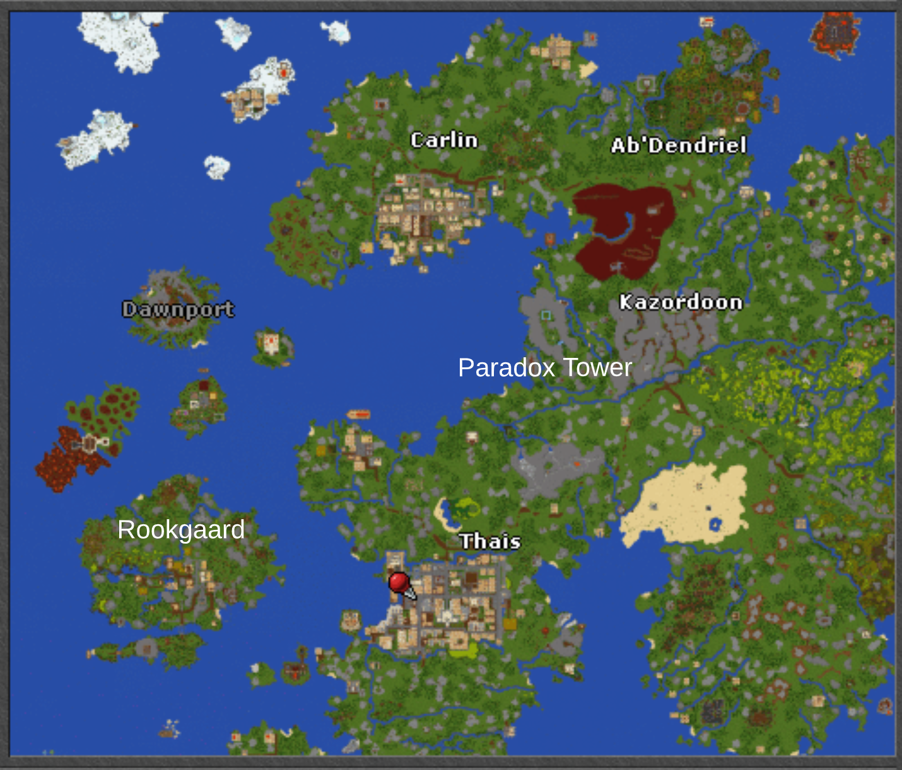
Firstly, we need to understand the paradox tower. A quest where we frequently visit Hellgate.
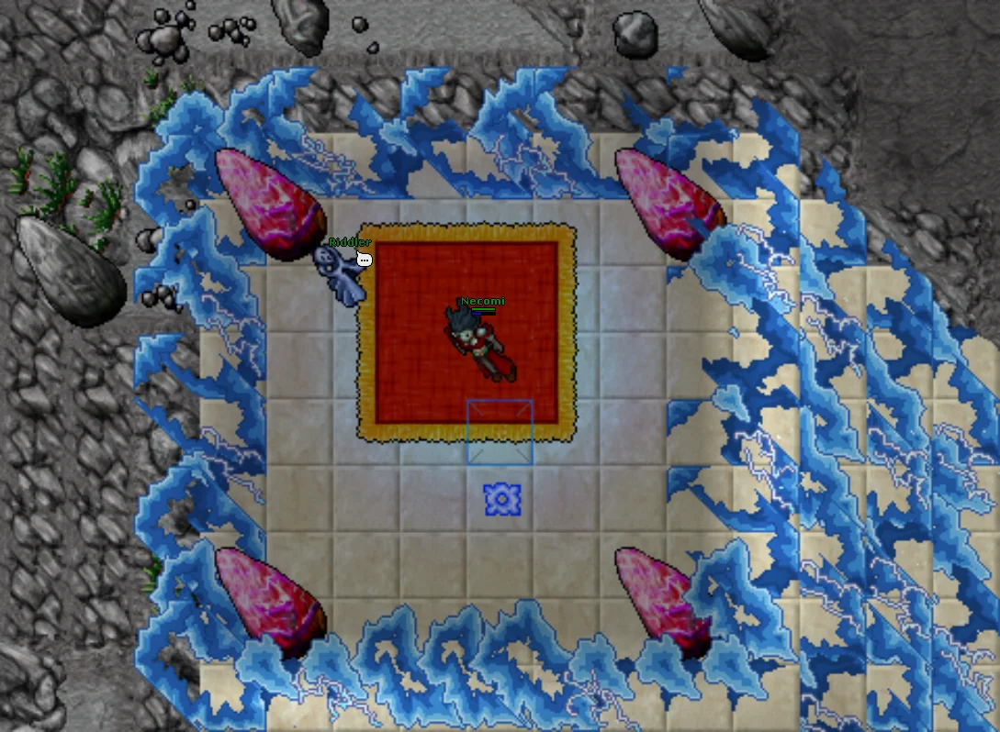
Many of you know already that this is where we learn Mathmagics from the Mad Mage in a complicated puzzle that IIRC took the players over a year to solve - let's take a look at what "mathmagic" might be. But there will be new things for almost everyone here, I'll show how I reason and bring up key points we'll need later on.
In the final part of the paradox tower quest, we have to answer a lot of riddles.
Riddler: ... What name did the necromant king choose for himself?
Necomi: goshnar
Riddler: HOHO! ... Who or what is the feared Hugo?
Necomi: demonbunny
Riddler: HOHO! Right again ... Who was the first warrior to follow the path of the Mooh'Tah?
Necomi: Tha'kull
Riddler: HOHO! Lucky you.
Someone knows ancient lore.
... Well all right. Do you wish to break the Seal of Madness?
Necomi: yes
Riddler: GOOD! So I will get you at last. Answer this: What is your favourite colour?
Necomi: green
Riddler: UHM UH OH ... How could you guess that? Are you mad??? All right. Penultimate question: What is the opposite?
Necomi: nothing
Riddler: NO! NO! NO! That can't be true. You're not only mad, you are a complete idiot! Ah well. Here is the last question: What is 1 plus 1?
Player: (any number)
Riddler: WRONG!
First time we meet the riddler, we cannot answer this question 'What is 1 plus 1'.
Whatever answer we give the riddler will teleport us to Hellgate.
Only way to learn this is by visiting the enigmatic character 'A Prisoner'- deep below thais in Mintwallin.
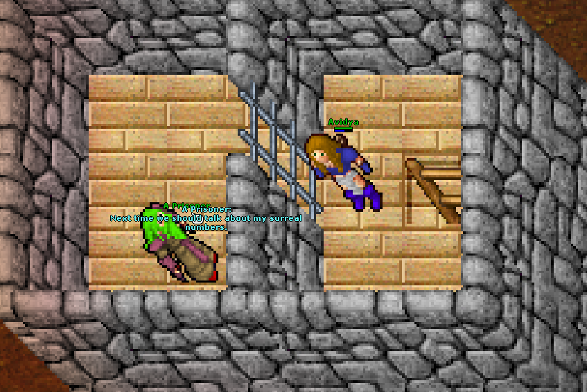
When saying goodbye, he mentions his surreal numbers!
Player: surreal numbers
A Prisoner: My surreal numbers are based on astonishing facts. Are you interested in learning the secret of mathemagics?
Player: yes
A Prisoner: But first tell me your favourite colour please!
Player: green
A Prisoner: Very interesting. So are you ready to proceed in you lesson in mathemagics?
Player: yes
A Prisoner: So know that everthing is based on the simple fact that 1 + 1 is [1 or 13, 49, 94]
Why? Why does 1 + 1 have such a weird answer?
Why are we constanty sent to Hellgate?
Mathmagic and the Prisoner
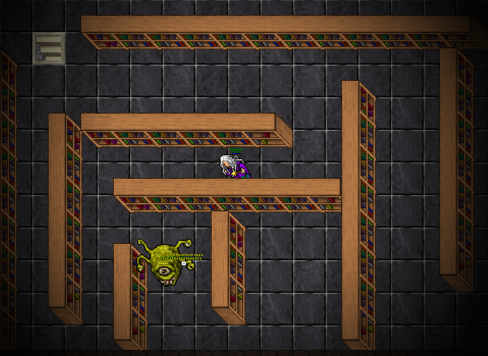
In Hellgate, we find 'A Wrinkled Bonelord, presumably old because of his wrinklieness.
His library contains 71 books of numbers.. just numbers, sequences within sequences. When asked about the books, we get something interesting.
Player: books
a wrinkled bonelord: Our books are written in 469, of course you can't understand them.
Player: 469
a wrinkled bonelord: The language of my kind. Superior to any other language and only to be spoken by entities with enough eyes to blink it.
Player: language
a wrinkled bonelord: Our language is beyond comprehension by your lesser beings. It heavily relies on mathemagic. Your brain is not suited for the mathemagical processing necessary to understand our language. To decipher even our most basic texts, it would need a genius that can calculate numbers within seconds in his brain.
- We need enough eyes to blink it..
- It's based on mathmagic
- He tells us that we can decipher it.
a wrinkled bonelord: I'm 486486 and NOT 'Blinky' ...
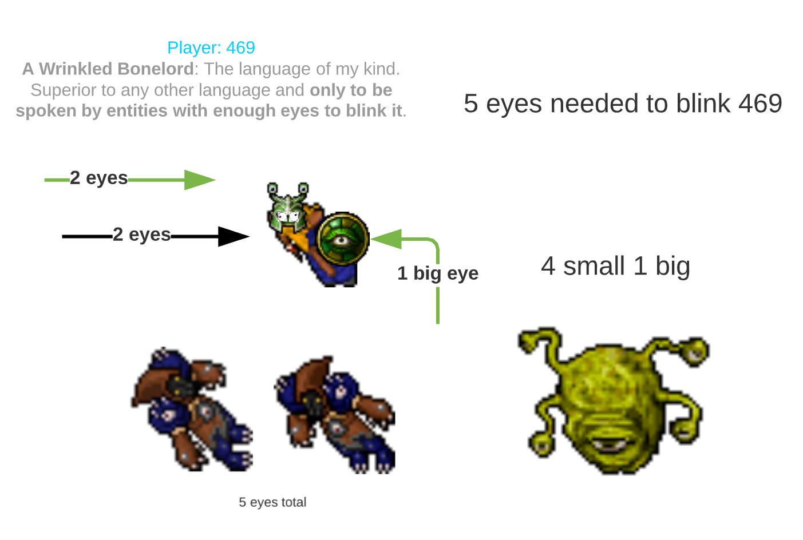
Beware of the bonelords!
The bonelords are an ancient race of underground dwelling necromancers. Although they can 'speak' like humans using some membranes, their native 'tongue' consists of a blinking code with each eye, where a blinking could mean some syllable, letter or word. It is by far the most complex speech we have ever encountered and it is almost impossible to comprehend. As far as we can tell it is not only a language but also some kind of mathematics. This combination makes it tedious even to try to understand that language.
The books the bonelords write contain only numbers and the code behind them is incredibly complex. This race was one of those which were part in the creation wars and therefore its peak of civilization and power is long gone. There are rumours about still existent bonelord settlements where they try to improve their unspeakable necromantic rituals and create an army of undead.
...
- A Prisoner teaches us Mathmagics
- 469 is based on Mathmagics
- During paradox tower quest, we are sent to Hellgate twice.
Let's look a bit at this strange Prisoner..
Nearby, in Mad Mage room quest, we need to answer a riddle..
Player: hi
A Prisoner: Huh? What? I can see! Wow! A non-mino. Did they capture you as well?
Player: riddle
A Prisoner: Great riddle, isn´t it? If you can tell me the correct answer, I will give you something. Hehehe!
When solving the riddle, we get to enter the Mad Mage room via key 3666.

Is that a bonelord? ;p
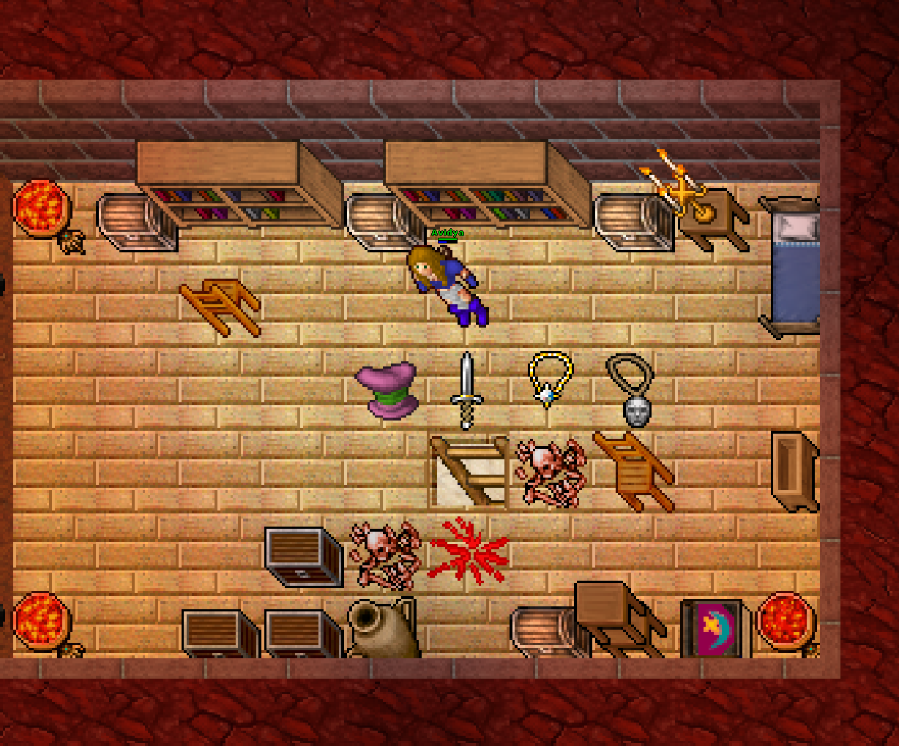
But it looks like he has been here longer. Considering his house.
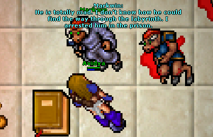
Riddler: UHM UH OH ... How could you guess that? Are you mad???
In Paradox tower, we find some books..
Paradox Tower
Doing it the mad way!
Now they call it madness, but generations to come will see my genius. I will proof them wrong once and for all. ALL of them! I will find answers to questions they don't even dare to ask. I will open doors to mysteries never even imagined by them. I WILL learn even the secret of death. I will rule supreme over the land. I will bring peace, death, justice, and fear. I will ...
Mad Mage Room
- How to use magic fields and walls in combat? ...
- Don´t be surprised! You could also use a bow instead of runes. ...
- How to conjure monsters that you don´t need? ...
- How to combine your magic power with the sword? Ten ways to use the spell "invisibility" ...
- Alatar´s world of pure magic - the arcanic power.
So the Mad Mage seems to know all kinds of magic since he can conjure monsters like the bonelords, he knows how to use a bow, enchants and uses swords among others, this is only done by 'Paladins'..
Player: mad mage
A Prisoner: Hey! That's me! You got it! Thanks mate - now I remember my name!
Player: sorcerer
A Prisoner: I am the mightiest sorcerer from here to there! Yeah!
Or a 'jack of all trades'.
Just how strong is he? As told by a nearby minotaur
The way is long. We are digging for about 30 days.
...
We made it to advance to a stone wall! Tomorrow we will break it! The day we will see the sun again is close! Palker will be proud of me!
..
Yeah! This was the final blow. The wall is broken! But, what is that? Behind the wall, there is a human warrior. He seems dangerous.
He has a glowing sword, a blue armor and green pants made of dragon-skin. He screams something like "Tataah!" and attacks!
I don´t understand the humans! What does that mean?
HE KILLS MY MINO-GUARDS! And now he turns towards me ...
Palker, Palkar, Kaplar!?
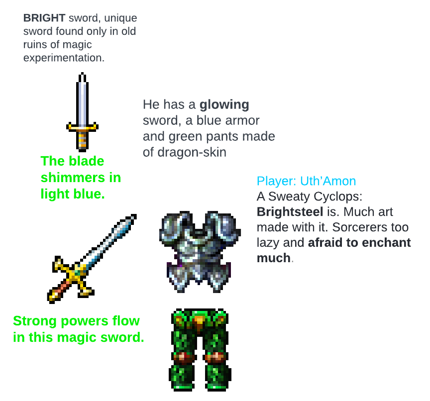
And if you find out his true? name, he screams the same thing
Player: Karl
A Prisoner: Tataah!
He's pretty darn powerful, having two items that still are unobtainable to this day, what we know of anyhow.. while the magic plate armor was one of the most coveted items back in the day, only dropped very rarely (1/1000) by the strongest foe that few could defeat, the Demons...
In Mad Mage room quest, hidden in the riddle to enter the living-chambers of the Mad Mage:
The sorcerer screamed some loud and mighty words and for a second the bridge glew in a blue light.
Another nice detail is that the Mad Mage tries to sneakily tell us something
Player: power
A Prisoner: Power. Hmmm. Once while we were crossing the mountains together a man named Aureus said to me that parcels are equal to power. Any idea what that meant?
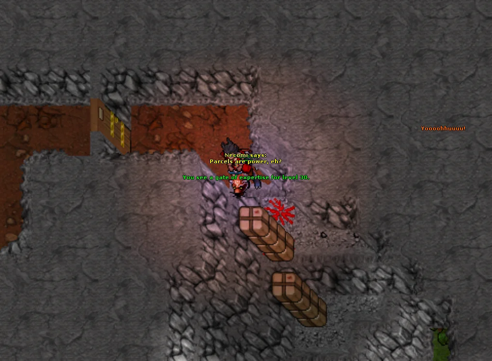
And it seems to be in the vicinity of Wyda, she's nearby Paradox Tower.
Simula: Aureus
Wyda: Aureus is a good friend who spends much time in this area!
Please go and explore Wyda, she is great fun and a great gateway into the old mysteries! When she's bored she gives even more hints! Why is she close to Kazordoon?
Let's move on.
The dwarves' god is called Durin.
Player: Durin
Kawill: The celestial paladin, the protector of our race. The only divine being we care for, and the only one who still cares for dwarfs.
Player: Hall of the Ancients
Isimov: The burial chamber of our ancestors. All firstborn of our race are there .. all but Durin.
Player: Durin
Isimov: Ah yes, the first born. He became a higher entity to protect us. His mortal remains were buried at a remote spot.
No remains of his body, while still caring for dwarves.
However, some of the more sinister people, especially those in Plains of Havoc, have some strange opinions..
Player: durin
Snake Eye: He’s the worst. The so called god of the dwarves. I don’t believe it. It’s all crap.
Player: durin
H.L.: Forget Durin. He’s the worst anyway.
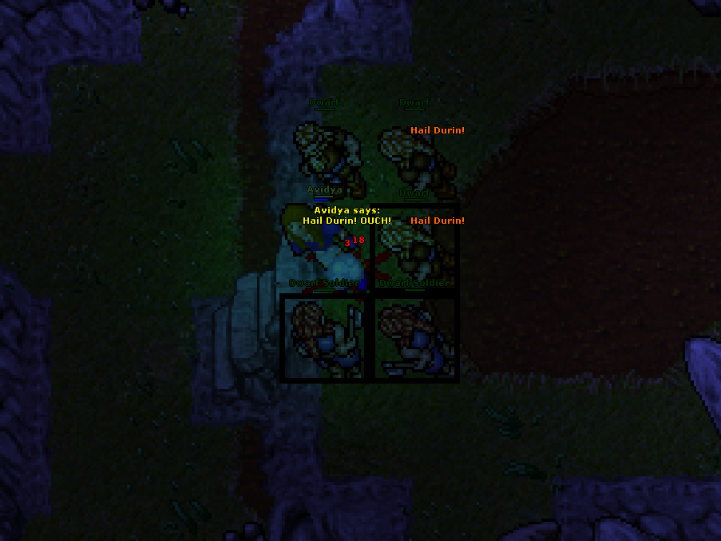
And in Thais, we find several people who seem to know him?
Bozo, our strange Jester...
Player: Durin
Bozo: Isn’t he the author of the book ‘Fun with Demons’?
Or..
How to summon black demons,
written by Dago the mage.
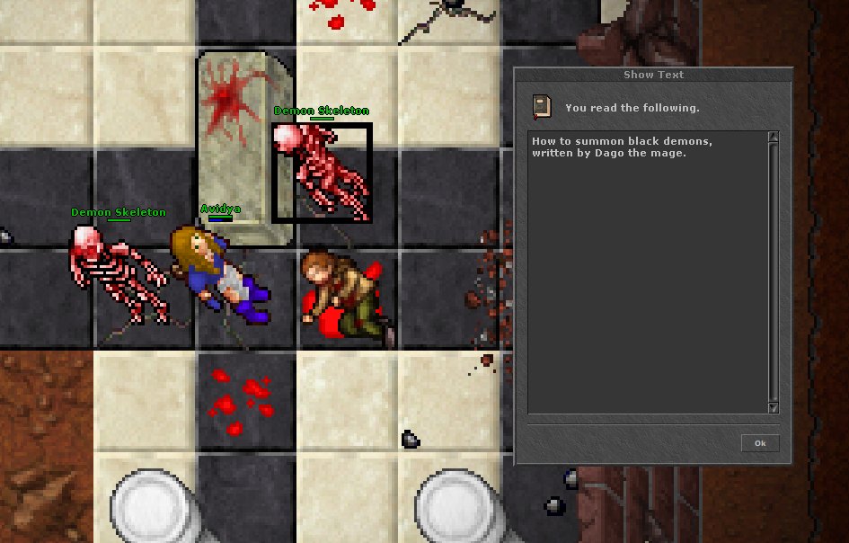
Did you know that another riddle in Mad Mage room can be found, which points us to Dago, The Necromantic Noble armor quest - where we again solve riddles. BOOK
And Oswald, who just loves rumours.
Player: Job
Oswald: I am honored to be the assistant of the great, the illustrious, the magnificent Durin!
Player: durin
Oswald: Just between you and me, he can be quite a tyrant.
I WILL learn even the secret of death. I will rule supreme over the land. I will bring peace, death, justice, and fear. I will...
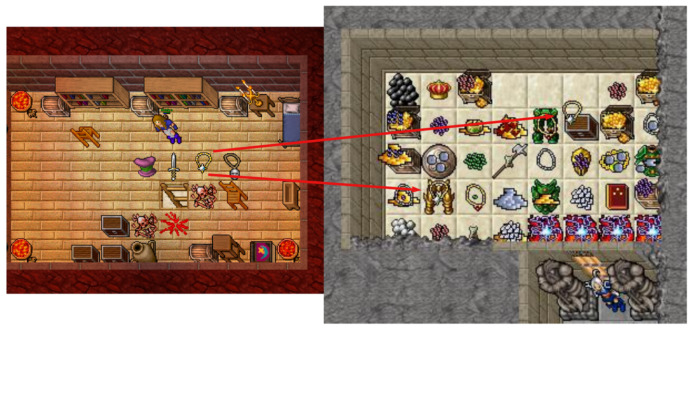
This makes me think that the Double-Crossing, Celestial, Mad Paladin faked his death so that the dwarves would let his place be but at the same time protect it with all their might. Chaotic genious really.
This star amulet is an unique item, and it kinda looks like Uth'Amon, brightsteel.
There are two star amulets in Kazordoon treasury, one in Draconia and one by Omruc, there is something fishy here. How do we explain it? We'll see later on.
Another funny thing is there lies a Helmet of the Stars below a Star amulet from a Celestial paladin? mayhaps.
Mad Mage tries to lead us on to the mountains with parcels, where the paradox tower quest is.
And the last riddle of the last mission in Paradox Tower quest requires us to go meet the Mad Mage!
One explanation I found is that The Mad Mage wants to get to know you!
If your color is green, and the tower belongs to the Mad Mage, then both the Mad Mage and the Riddler knows that 1+1 equals x if favorite color is y, thus allowing you to finish the quest. If you try to learn mathmagics without telling the Riddler your favorite color, the Mad Mage does NOT let you know the secrets..
Mechanically, the number is always random, but lore-wise, it's a tool for the Mad Mage to meet whoever solves his greatest riddle, as he likely bound- I mean controls the Riddler and knows you. (but is it only that? ;)
And the mad mage is old, he could've been there with the first Mooh'Tah.
He could've been there when Goshnar became the necromant king.
He was there to see 'hugo demonbunny', which noone except for some former Nightmare Knights know about.
How would he otherwise be able to ask those questions in his riddles? He could've read about them sure, but knowing what Hugo is, is a myth and not written anywhere. Not even Oldrak, a Monk in Plains of Havoc mere meters away knows if it exists.
Create Beer
No Dwarve can resist a good mug of Jimbin's beer and this spell will one day allow you to create such beer with a few simple ingredients. Collect the hair of a troll, a mushroom of any sort, a small amount of soul from the mad mage valley, some water from around the mad mage valley and the silence befire dawn. Place the ingredients into a flask of the mad mage valley water, cork it and boil it. ...
This is one of the greatest mages alive, and i suggest that one of his names is Durin.
We find that Paradox Tower lies within the Mad Mage valley, the name can only be found in a hidden book, one of the dwarves secret beer recipes!
...
Those are the findings. It was also found that the water that flows by the mad mage valley is quite magical. One of our mages suggested that it is the "soul of the sea"
The book below is one of the most famous books in Tibia, and it's starting to get suspicious- because it indicates that the Mad Mage could've written it.. and if the Mad Mage is ancient, it would make even more sense..
You can not even imagine how old I am.
In your wildest dreams you won't see the things I have seen. I am the last of my race and even though I am several centuries old I am not immortal and will eventually die. I fear that day. Not for me - I am weary and I don't care much about if I'm alive or dead. But I fear for all these memories that will die with me. For all those who no one will remember anymore.
Words can't truly preserve their essence so I will leave no books or stone tablets. If I die, everything I have witnessed will die with me as if it has never existed. I was there when Rorak slew Tingil at the stairs of the seven temples. I was there as Riik led his peaceloving people to the far north to find refuge from the war. I was there to witness the betrayal of Asric for the whims of a female that was long dead by then. I fought with the last Frdai a futile battle on the plains of Weskurt against the unseen legion. I witnessed Ss'rar making his move on ascension to become the serpent god. I watched the first elves struggling to form a nation with the help of the lightbearers. It was me who assisted the great calculator to assemble the bonelords language. And you come here to this mountain and ask me how to win the heart of some shepherdess? This world has become a ridiculous mockery.
Reason I was raving about the mountain, 'Mad Mage valley', is because coupled with mathmagic it gives you enough hope that there could be way more to this guy than in our wildest dreams...
Books only powerful people can read
Another lead to follow is the secret language of powerful people, these hints are somewhat difficult to find as you have to explore multiple areas for hints forward.
Player: books
A Prisoner: I have many books in my home. But only powerful people can read them. I bet you will only see three dots after the headline! Hehehe! Hahaha! Excellent!
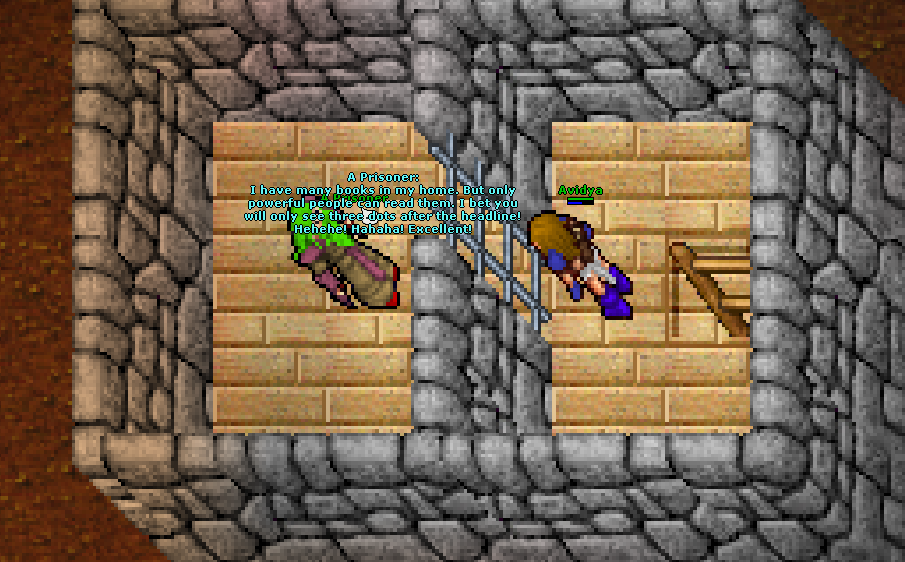
Alatar´s world of pure magic - the arcanic power.
... <--- three dots!
Now I've seen these strange writings on several other places!
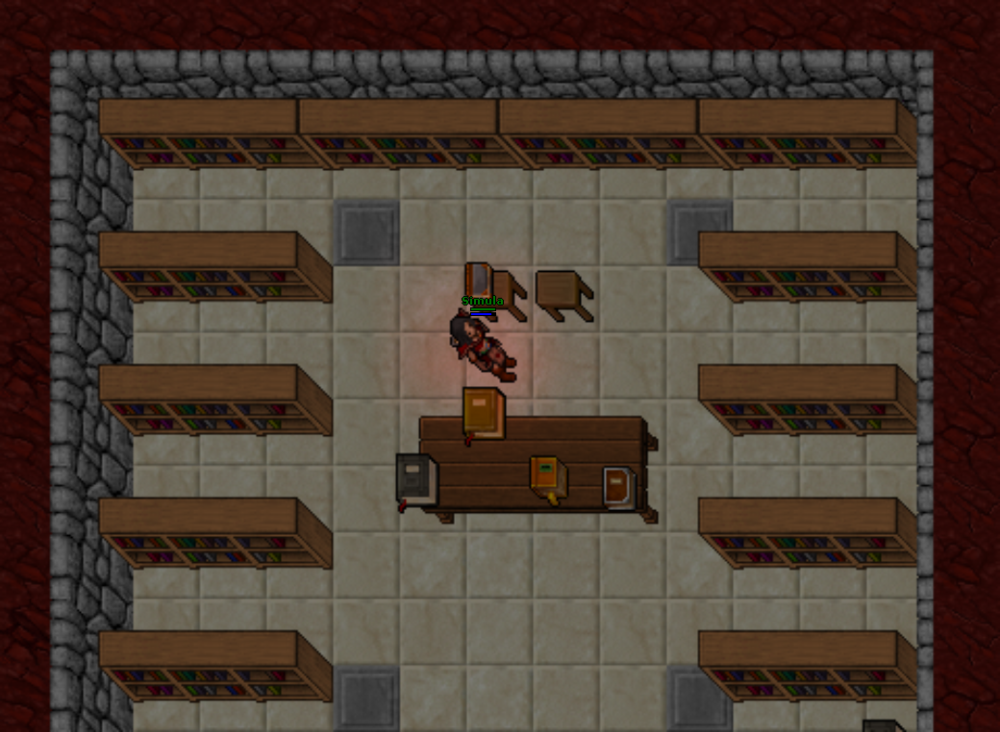
A book in Jakundaf Secret Library written by another powerful mage:
Now, being a really old magician, I decided to write down some of the formulas of potions I invented during my lifetime. First I thought it will be best to give clear advices for everyone to mix them. But after some days of crucial thinking I had a vision - everyone would be able to mix these powerful but dangerous potions within minutes without being aware of the consequences! It needs lot of wisdom and willpower to become a experienced and responsible magician. This doesn't mean to be cowardish - it means that you know your powers and that you exactly know your limits!
So, to prevent misuse of this knowledge i will write down these formulas in ****, a very old language only known by the wisest sorcerers.
And then the book abruptly ends.
But you might think, three dots and four stars are not the same?
In Drefia, a center for powerful necromancy in a ruinous city underground the southern continent of Tibia, we can find ''Circular Canon of Eternal Darkness" (compressed)
Circular canon of Eternal Darkness
... - - - ::: - - - * * * ::: * * * ... - - - ::: - - - . . . . . . . . . . . . - - - ::: - - - ... * * * ::: * * * - - - ::: - -
Now, to show you how obscure lore can be, and what new information and eyes can tell us, I will show you a small but exciting portion of a decades old mystery that very few know of.
Following this Oswald, who seem to work for this Durin.. we find that he has heard quite a lot of gossip, could there be any truths to them?
Rumours
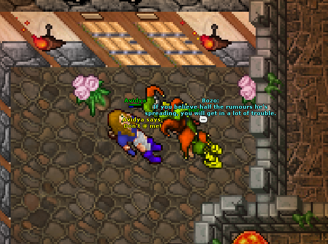
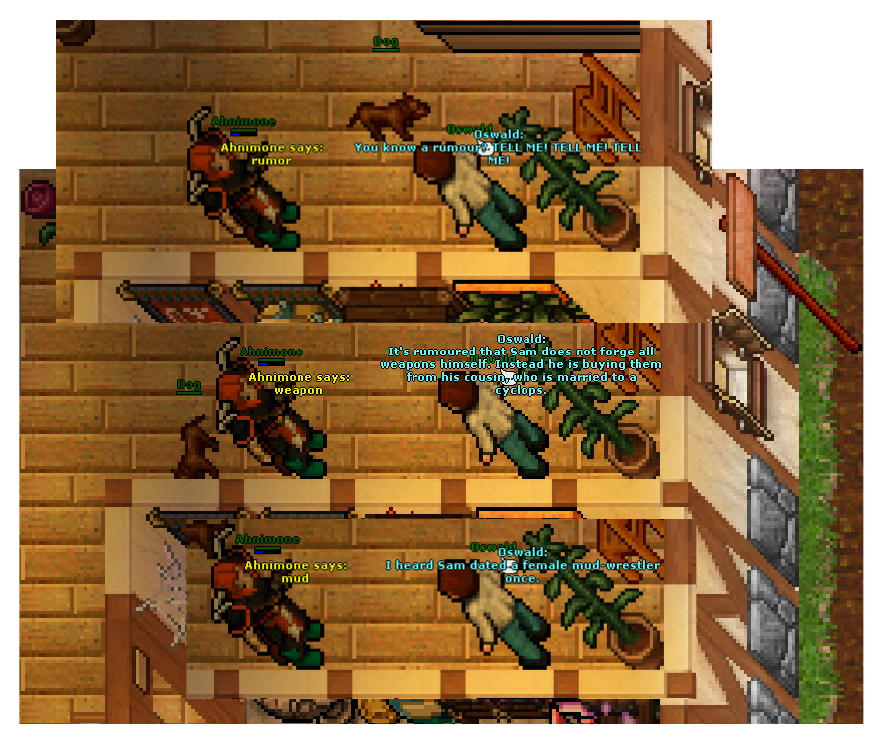
Oswald: I heard Sam dated a female mud-wrestler once.
Oswald: It's rumoured that Sam does not forge all weapons himself. Instead he is buying them from his cousin, who is married to a cyclops.
Through these quite odd keywords, especially the mud one, we get outrageous statements..
could we think that Sam dated someone who.. wrestled mud?
And gets weaponry from his Cyclops cousin?
Oddly enough, on Rookgaard there is one single NPC that responds to the name of someone on Mainland Tibia, our good ol' Obi.
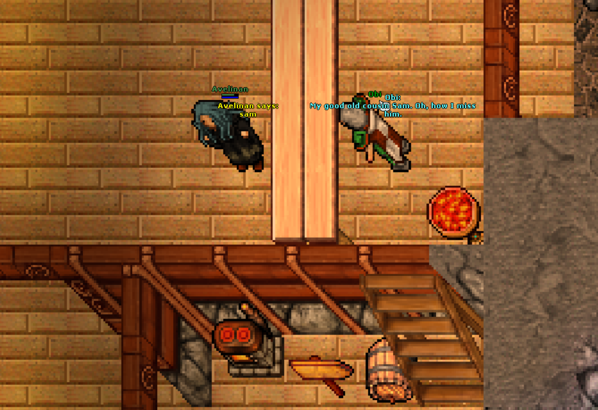
Obi: My good old cousin Sam. Oh, how I miss him.
So we found a cousin, but it doesn't seem like he's married to a cyclops..
But we are pointed to Rookgaard, there must be a reason!
Investigating and researching we stumble upon Amber, after talking a bit something hit me hard
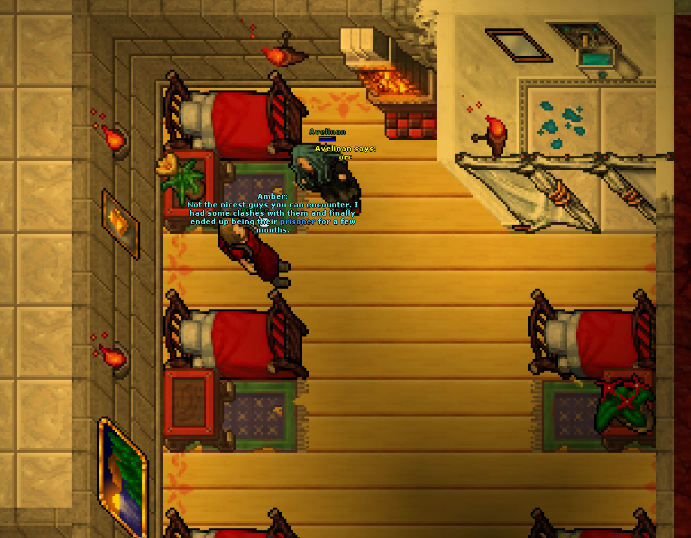
Amber: Not the nicest guys you can encounter. I had some clashes with them and finally ended up being their prisoner for a few months.
Amber has been prisoner of the muddy orcs! Could she be Sam's date?
Now this hit me harder when we see the color of her backpack, red.. Do you remember Sam's old backpack quest?
Where rarely an orc spawns to the north, by the orc's prison!
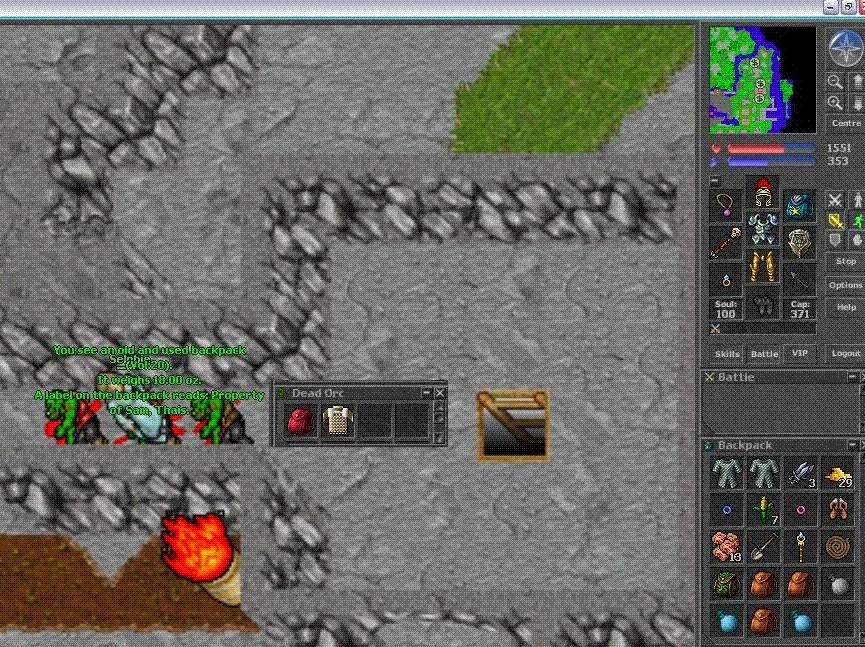
Which sends us to Kroox, a dwarven armorsmith! Then through the tunnels of Kazordoon into some old tunnels used as storage which has been overrun by Giant Spiders. We also get Crusader Helmet here, which is interesting.
Well, the rumour was that Sam got all his weapons from a cyclops.. coincidentally, there is a weapon-smith right by Kroox, run by Uzgod.
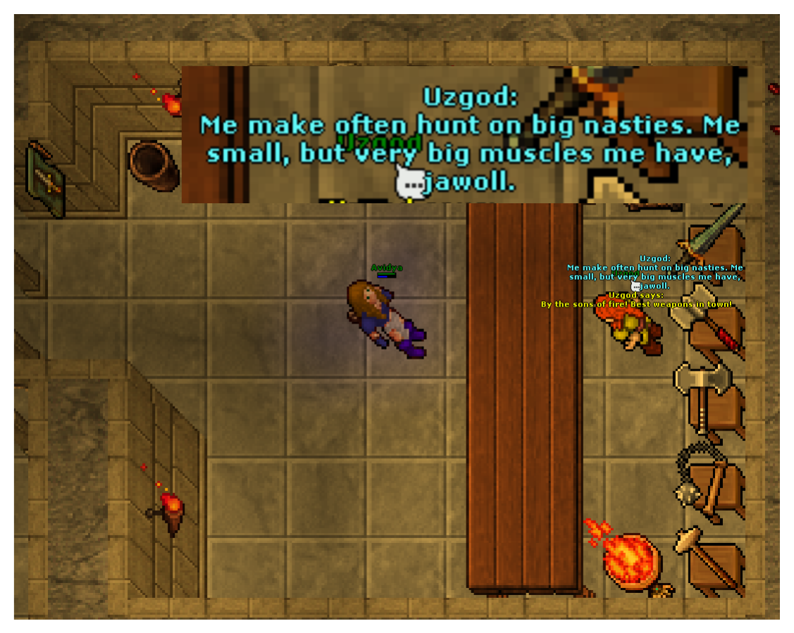
Avidya: monster
Uzgod: Me make often hunt on big nasties. Me small, but very big muscles me have, jawoll.
Avidya: job
Uzgod: Me a blacksmith is, an' weapons me sell. You want buy weapons?
Whose english is way worse than any other dwarf in Tibia by a mile and a half and then some.
Could he be a cyclops? Let's tickle that thought
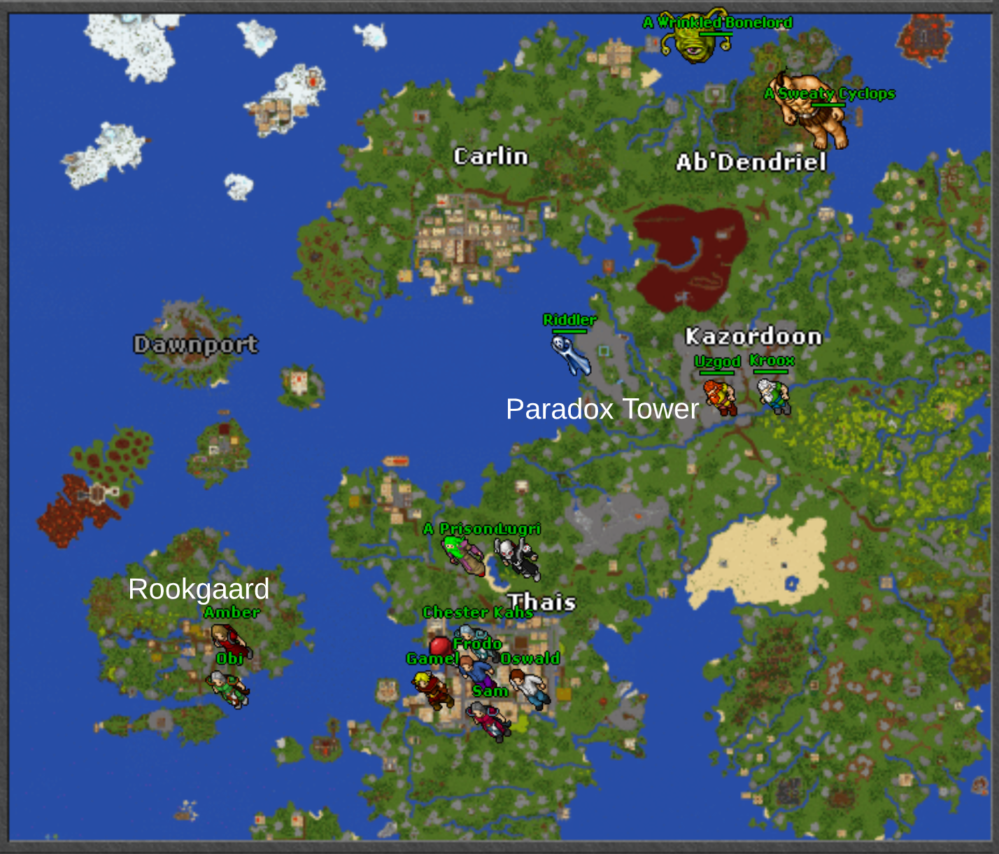
Now, 'coincidentally', Obsidian Knife quest involves both Uzgod and A Sweaty Cyclops (Ben) north in the elven city Ab'dendriel
Ben is a Weapon smith, let's have a chat.
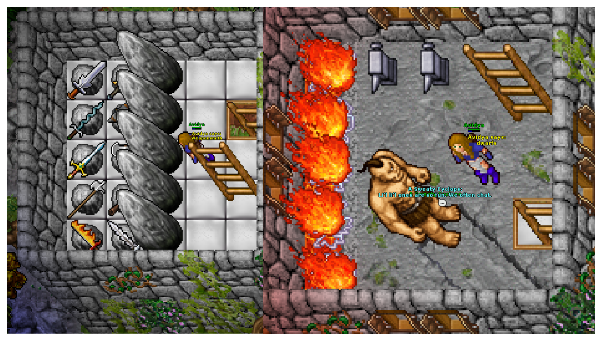
This is when we find out that Ben is often visited by the dwarves, eventhough we find countless of mentions that the dwarves and elves despise eachother?
When asking about Uzgod it starts to get more and more likely
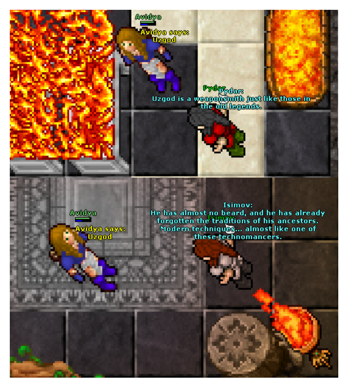
And, yeah, who'd've thunk. These were the only NPCs talking about magic plate armors for a long time, and might still be..
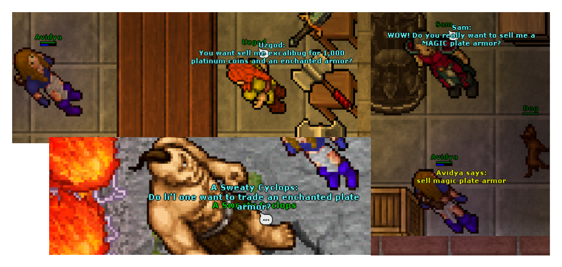
So there really seems to be some truth to Oswalds rumours, this is actually good for us - since it adds validity to the small strands of connections of Mad Mage being Durin and Oswald working for Durin..
But, shocker is!
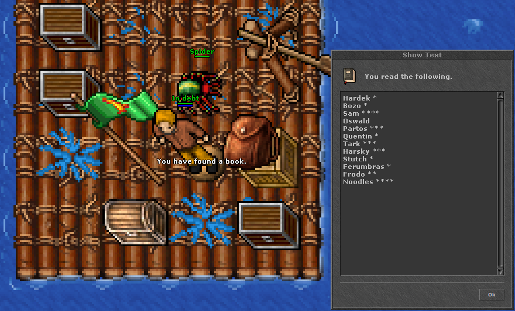
Ambers notebook, do you recognize this language?
Do you trust that Amber is telling the whole truth?
Why did Uzgods english quickly go perfect when we entice him with Excalibug?
- Bozo made a joke earlier about Durin being the author of Fun With Demons, and Bozo is actually a prince..
- Sam, who always keeps his sandals in storage, perhaps it would look odd if you only had an odd amount of toes? 3, 4 like the cyclops?
- Oswald's name is there, though not much seem to be written about him.
- Ferumbras,
- Partos the prisoner,
- Both Kingsguards and even Noodles...
Now, many of these names have now been found to be in some common force or manipulating some of the names.
In the Secret Services quest, we trick Oswald into doing something for us in the King's castle.. He's gullible and a way into the castle. Ferumbras also attacks Thais, done it twice.
And no one believes in Oswalds rumours anyway, but maybe Bozo knows.
Simula: oswald
Aruda: As far as I know, he's working in the castle.
This is a key insight to the rebellion in Thais.
As the head of Tibian Bureau of Investigation say

Player: Army
Chester Kahs: Our army might be infested with spies already.
Player: Spies
Chester Kahs: Polymorphed minotaurs, shapeshifting demons, possessed innocents ... who can tell for sure.
Why is Frodo on the list? could it be a hint for us where to look?
To complete this part of the story, I will continue with what we know.
Now we've figured out just how big this rebellion really is, so then we'd see the importance of what our lovely Oswald has to say about some other sinister people.
Sinister Strangers
Avidya: gamel
Oswald: This man lives in the darkness like a rat and he is also as handsome as one. He surely is up to no good and often consorts with sinister strangers.
Avidya: sinister strangers
Oswald: Just last week, a one-eyed man, who had a room at Frodo's, met him in the middle of the night.
Now 'sinister stranger' is not a highlighted word, meaning it's more indication of there being a secret..
The brutal part in this mystery is combining one-eyed man with sinister strangers into 'one eyed stranger'. This was not found by players, but was leaked.
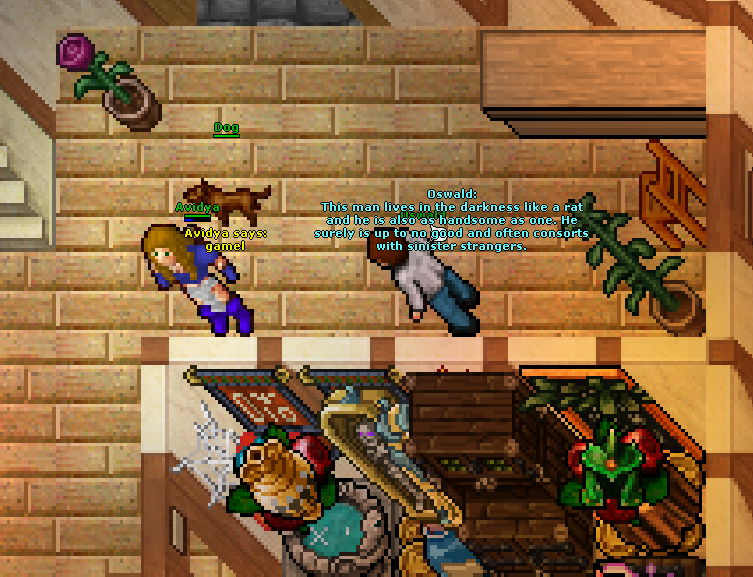
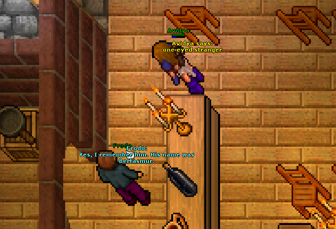
Using this.. name.. which is an anagram of Ferumbras.. and we can trick Gamel to get an inside job.
Avidya: rebellion
Gamel: Uhm... who sent you?
Avidya: berfasmur
Gamel: So, you are a new recruit in the ranks of the rebellion! To proof your worthyness, go and get us a magic crystal.
Gamel: Brilliant! Bring it to the priest Lugri so that he can cast a deathcurse on the king. The password is 'death to noodles'.
However.. his reaction is pretty strange, he casts soulfire.
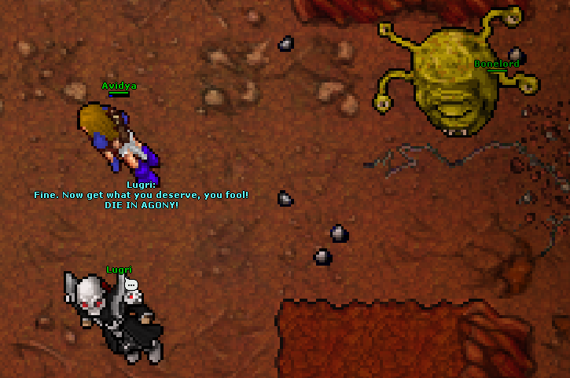
But what now?
Well we can report our findings to the head of TBI
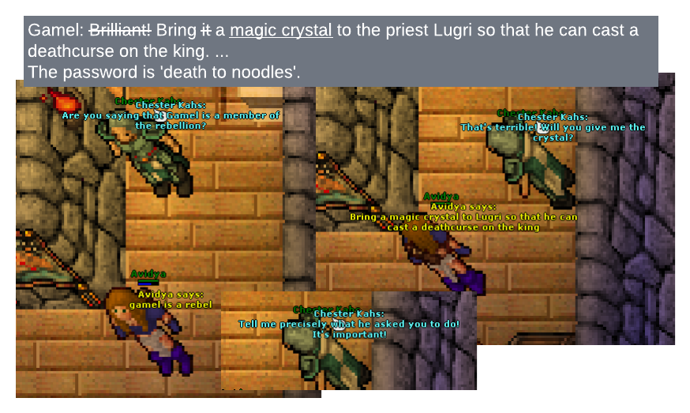
Avidya: Bring a magic crystal to Lugri so that he can cast a deathcurse on the king
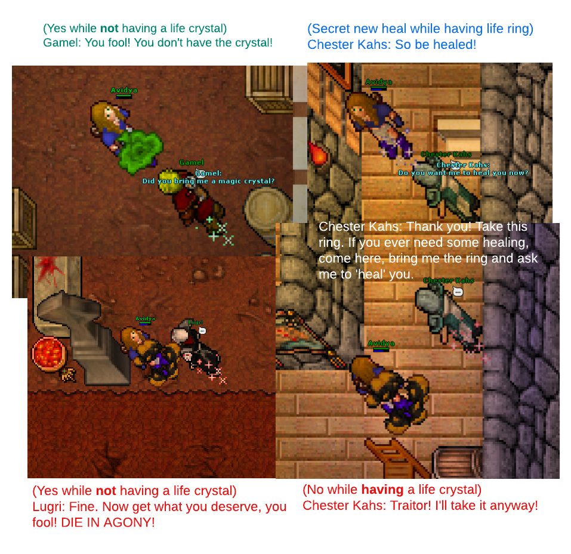
What do you think is going on here? Is the life crystal the correct crystal? or even correct path?
And I promise you when I say that I've barely showed even a third of the mysteries around Amber. I don't want to spoil everything, but if you are curious: More hints are in her room! And maybe in this paragraph. And Lugri outfit. The Prisonisle..malech.. TARK
Recap
Quit reading now if you would love to continue figuring out fanstastic puzzles like this on your own - there are an endless stream of them and the dopamine rush is unreal. Nothing like it.
You have many things to go on, go visit them ingame, get a feel of them and follow their leads - it will take you all over Tibia and I cannot understate how fantantastic job everyone has done with the lore. Every single thing can be explained and is consistent.
I attacked this with mindset that I need to know (figuratively) 99.99% of the lore of Tibia, then any 0.01% might emerge and become obvious. Just like 469 will be as you continue reading.
So far, we have visited these places:
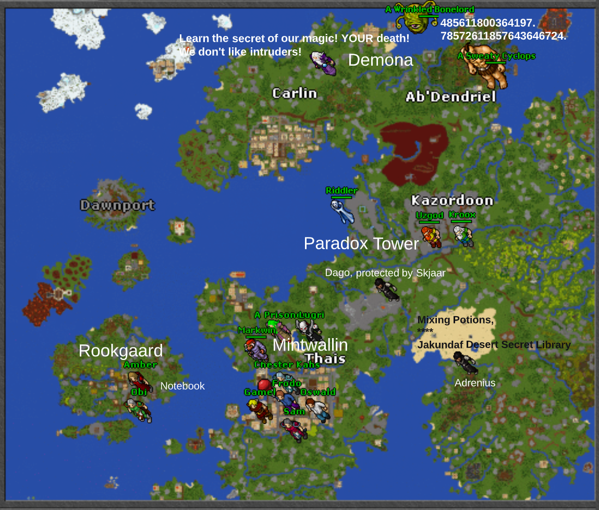
We've had to visit all three 'Necromancers', Adrenius, Lugri, Skjaar.
All of them riddled with riddles - and other riddles we looked at earlier - funny how the necromancers create a triangle where Triangle Tower is in the middle.
- Amber seems to be a strong mage with mind-controlling or even summoning abilities
- Sam, Uzgod & Ben are likely working together - connected to:
- A big rebellion in Thais.
- We have seen how we can crossreference several sides of a story to make a single theory that works and gives us further leads.
- We have seen how obscure clues can be and how important context is.
- We gained some insight in how CipSoft guides and leads us through the mystery
- We've found numerous instances of ****, thus
- We are looking for something of old with extreme powers
We are looking for something.. of old.. with extreme power? A particularly fitting place is:
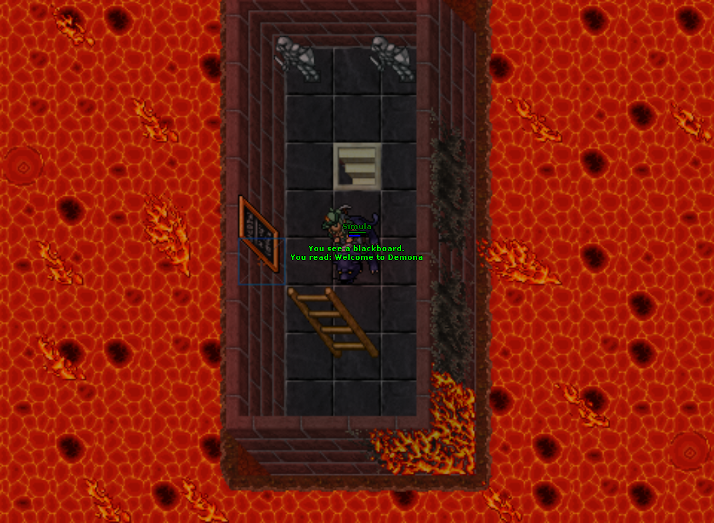
Demona.
- They have a FIVE book series on The History of the Ancients, ALL BLANK... (rreeeeeeEEEE!!!!!)
- We can find a letter from Ferumbras there, making demands and threats as if he'd rank above them all..
- Very rarely we can find a warlock wearing a ring of the skies.
- There are bonelords in their maze.
- And we find two books on the warlocks battletactics - What's a way to protect and share their sensitive military tactics within their heavily fortified lavabase?
Battle tactics for Demona
Written by Zhandramon
This book is......EMPTY! All sheets are blank!
But you can feel a strange energy flowing through the book.
We now have so many leads and strands pointing us to Demona.. which at the time were one of the most remote and challenging places in Tibia, requiring you to traverse the Maze of Lost Souls, which took 10 minutes when knowing the correct way.. it's brutal. And the warlocks were just behind demons in power and rank.
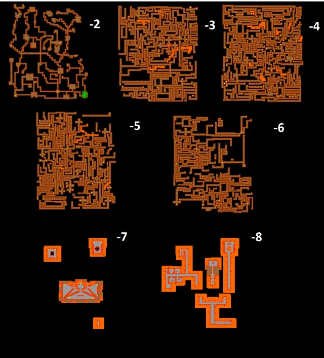
Player: bonelord
a wrinkled bonelord: Our race is very old. Over the time, we have been given many different names by other races. The term bonelord sticks to us for quite a while now. In our language the name of our race is not fix but a complex formula, and as such it always changes for the subjective viewer.
Let's take a sneak peek in one of many books in Demona.
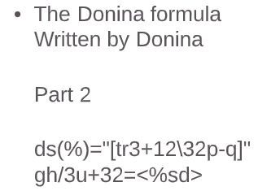
Don't be afraid, we actually don't need to be good at math!
Grab a beverage and get ready for part two - It's going to get more and more interesting as we're going to unviel old secrets of the warlocks and their ancients!